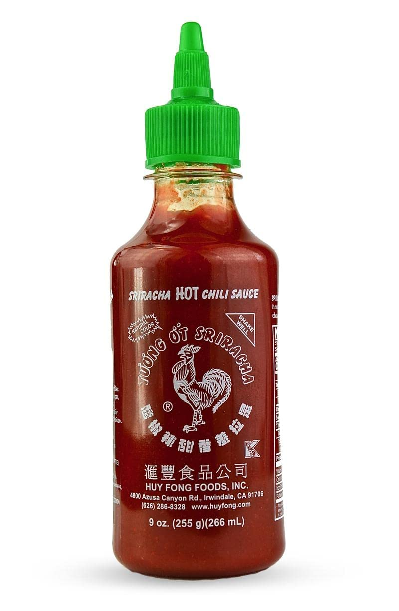
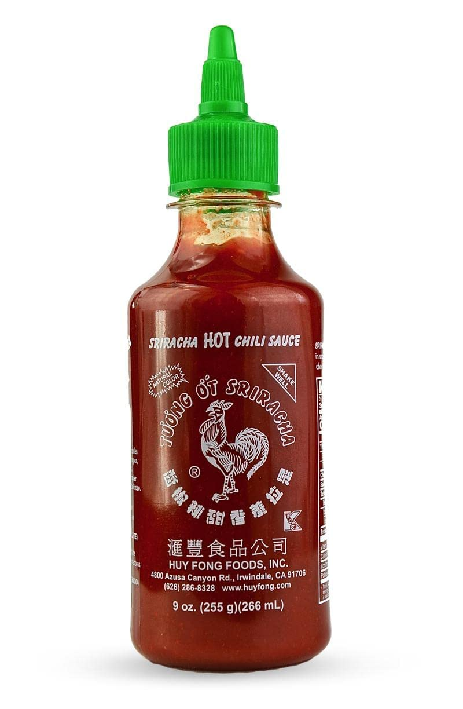

Double Chocolate Cookies
Origin: Michigan Source: Family Recipe Category: Dessert
My daughter learned to make these cookies at a baking camp at Zingermanns and has tweaked the recipe to fit the taste buds of her siblings. They are extremely sugary so the salt helps to balance it. Note, these cookies are best eaten very quickly.
Recipe Ingredients
- Unsalted butter
- Granulated Sugar
- Packed light or dark brown sugar
- Large egg
- Pure vanilla extract
- Semi-sweet chocolate chunks (melted)
- All-purpose flour
- Natural unsweetened cocoa powder
- Baking soda
- Salt
- Semi-sweet chocolate chunks
Recipe Steps
- In a mixing bowl cream together the butter, granulated sugar, and brown sugar
- Add the egg and vanilla extract and beat well
- Add the melted chocolate
- In a separate bowl combine the flour, baking soda, cocoa powder and salt
- Combine the wet and dry ingredients
- Add the unmelted chocolate chunks.
- Form 15 cookies and place on a baking sheet.
- Cook for 12 to 13 minutes at 350 degrees.
Additional Food images


Tomato basil pasta
Origin: Italian Source: bon appétit Category: Main Dish
This recipe is a fantastic way to step up your pasta game without taking too much more of your time. It tastes way better than basic pasta with jarred sauce! I originally found this when my sister made it, and got the recipe off of Bon Appetit’s website. PS avoid using the shaker parmesan – I used that the first time I made this and it drew down the quality of the dish.
Recipe Ingredients
- pasta
- tomatoes (any larger than cherry)
- basil
- red wine vinegar
- extra virgin olive oil
- crushed red pepper
- finely grated block of parmesan
Recipe Steps
- cut tomatoes along equator
- squeeze juice and seeds out of tomatoes and discard
- cut juiced tomatoes into small-ish pieces
- smush down with large spoon to release some leftover juices
- add in vinegar, olive oil, crushed red pepper and half of parmesan
- let marinate for half an hour
- add basil
- cook pasta
- toss marinade with cooked pasta and serve topped with remaining parmesan
Additional Food Images


Sushi Bake
Origin: Asian Source: Own recipe Category: Main dish
Do you want easy, quick way to enjoy sushi without having to do all of the work? Try to make our sushi bake, which takes 10 minutes to assemble and 20 minutes to bake in the oven. Our recipe feeds 8 people.
Ingredients
- 1 avocado
- 1/2 cup soon sauce
- 2 cups of rice
- 1 tablespoon of rice vinegar
- 3 tablespoons of mayo
- 1 8 oz package of imitation crab
- 1 medium piece of salmon
- 1 cucumber
- 3 tablespoons of sriracha
Steps
- Preheat oven to 350 degrees
- Make rice. Mix rice vinegar into rice after it is cooked
- Lay out all of the rice at the bottom of a large baking dish
- Lay out the imitation crab and cucumber on top of the rice
- Mix the imitation crab and 2 TBSP mayo into a crab salad
- Smear the crab salad onto the next layer
- Slice the avocado and lay those on the top of the dish
- Pour the rest of the mayo and sriracha on top
- Bake for 20 minutes
- Enjoy!
Additional Food Images

 

{kind=link}